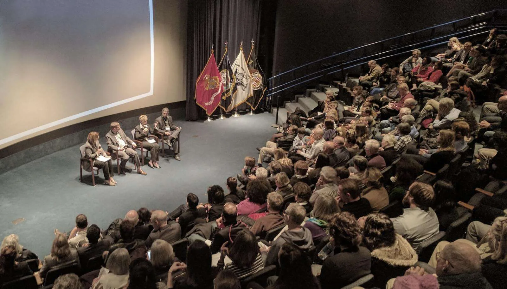
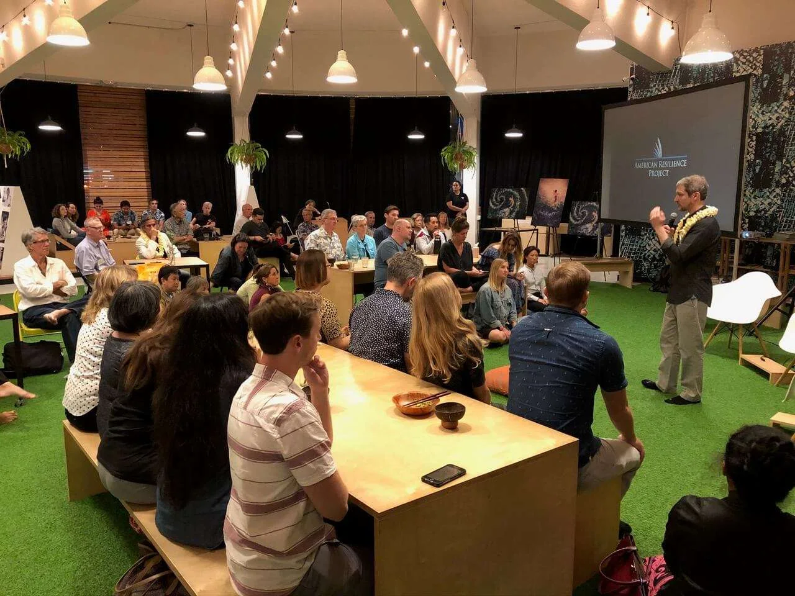
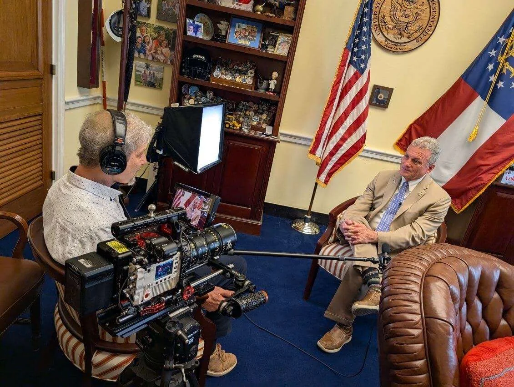
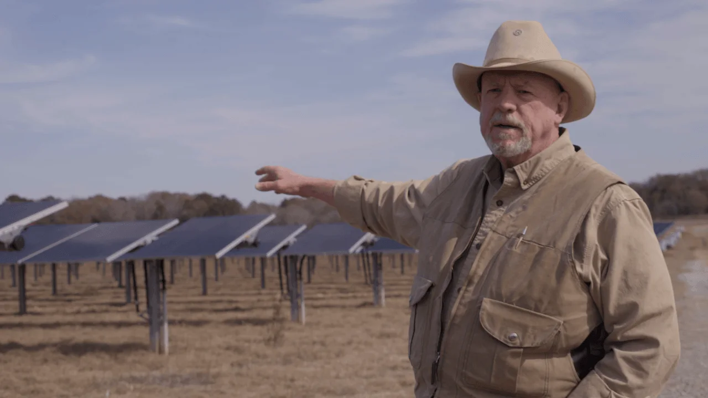
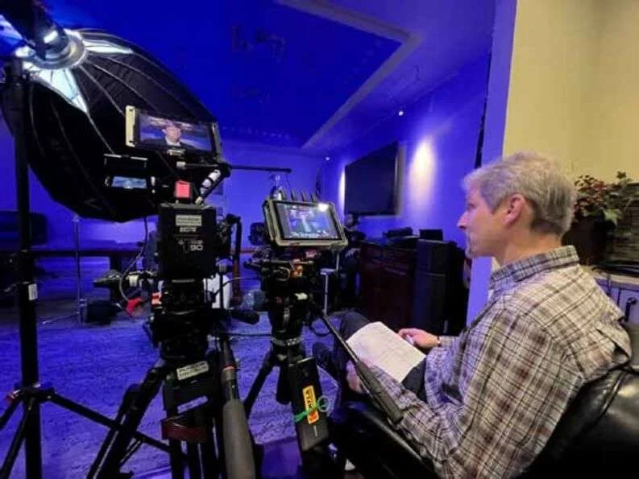
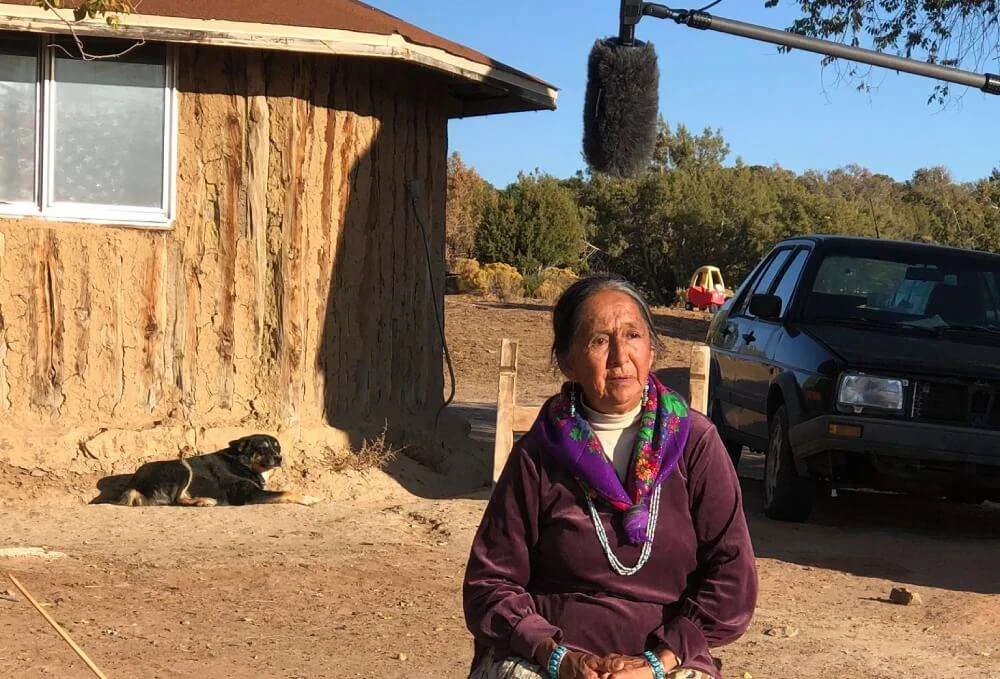

A Range of Services to Meet
Your Communications Needs.
Organizations face more communications demands than ever: internal alignment, public storytelling, executive visibility, media engagement, and high-impact content. Few teams can take all of it on alone. Here is how Roger Sorkin delivers strategic advantage.
Fractional Communications Officer: Vision & Counsel Under Pressure
Not every organization needs a full-time chief communications officer, though many would benefit from the vision, seasoned judgment, and efficiency the role brings to decisions made under pressure.
This is especially crucial at critical turning points during the growth of mission-driven enterprises, young companies, and non-profit coalitions. As your fractional communications leader, Roger integrates directly with leadership to provide high-level clarity without the long-term overhead of an executive hire.
- Ongoing C-suite strategic counsel
- Internal & external messaging oversight
- Executive support & speech preparation
- Crisis preparedness & rapid response
Communications Audit: Diagnosing Friction at the Root
When an organization senses that its communications are not landing the way they should, the instinct is often to reach for a quick fix: a new campaign, fresh marketing, or a media push.
Without a clear, candid read on what is actually causing the friction, those reactionary measures tend to address the symptom rather than the underlying cause. The Communications Audit helps your organization take a meaningful look at the full picture through an immersive on-site assessment.
- On-site immersion & executive discovery
- Candid cross-departmental interviews
- Root-cause narrative friction analysis
- Actionable roadmap with clear priorities


Simulations & Role-Playing: Preparing for High-Stakes Scenarios
The communications moments that shape an organization's reputation: like a difficult board meeting, a tough congressional inquiry, or an adversarial public forum: are often the ones no one is quite sure how to prepare for.
Simulations give your leadership team a safe, rigorous environment to work through those scenarios before the stakes are real. Built on methods refined at West Point and Fordham University, sessions recreate the psychological friction and unexpected questions leaders encounter in real life.
- 1 to 3 custom on-site intensive visits
- Scenario design specific to your sector
- Live adversary and reporter role-playing
- Recorded debrief with tactical critiques
Media Training & Spokesperson Readiness: Turning Soundbites into Strategic Assets
An employee who can speak comfortably to a reporter: or who knows when and how to hold back: is one of the most undervalued assets an organization has.
The wrong soundbite can follow a company for years, while the right one can open doors that would otherwise stay closed. Mock public presentations, simulated broadcast encounters, and individualized feedback help employees feel prepared to engage across television, podcasts, print, social media, and live event formats.
- On-camera interview simulation
- Soundbite discipline & message bridging
- Cross-platform broadcast preparation
- Individualized video review & critique

Executive Coaching & Leadership Presence: Commanding Authority & Speech Craft
The people at the top of an organization carry its story whether they mean to or not. How that story lands comes down to craft: speaking clearly, reading the room, and holding a position under pressure.
One-on-one coaching is available as an ongoing advisory engagement or as focused preparation for a specific high-stakes keynote, investor presentation, or board review. Roger partners directly with leaders to build poise, authority, and emotional resonance.
- Speechwriting & keynote crafting
- Talking-point architecture & Q&A defense
- Physical presence & vocal delivery
- High-pressure board & investor readiness
Content Roadmap & Narrative Strategy: Building Sustainable In-House Storytelling
Bringing in an outside consultant who produces great content and then disappears is a recurring expense.
A team equipped to produce its own content: sustainably, in its own authentic voice: builds an in-house capability that pays dividends long after an engagement concludes. The Content Roadmap is a documented system built around democratized storytelling, giving staff the technical know-how and narrative confidence to create compelling content aligned with company goals.
- Documented storytelling architecture
- Production workflows & tool recommendations
- Editorial calendar aligned to policy targets
- Team capacity-building workshops


Podcast Production & Audio Strategy: Sustained Sector Thought Leadership
A well-made podcast can establish your organization as a definitive thought leader while helping you master the narrative of your specific sector.
Podcasts command sustained, week-after-week attention that short-form marketing channels struggle to achieve. Roger delivers end-to-end production: from concept development and guest curation to high-fidelity audio engineering and distribution strategy.
- Editorial concept & season narrative arc
- High-profile guest curation & prep
- Studio recording & expert audio mastering
- Micro-content cutdowns for social campaigns
Impact Filmmaking & Visual Storytelling: Human Documentaries That Convene & Persuade
A documentary built around authentic human stories is a convening tool that allows people to gather, discuss complex issues, dispel misconceptions, and connect deeply.
It leaves an impression that endures well beyond the screening itself. These high-level engagements cultivate the relationships and shared understanding required to build enduring stakeholder consensus and accelerate policy reform. Roger oversees end-to-end production with cinema-grade craftsmanship.
- Ethnographic research & investigative scripting
- Cinematography & authentic subject directing
- Post-production, scoring & color finishing
- Capitol Hill & festival screening tour rollout

How Organizations Engage Roger Sorkin
Three flexible, high-impact engagement models structured to fit your organization's timeline, governance requirements, and strategic stakes.
Advisory Retainer
Ongoing fractional C-suite leadership and trusted counsel embedded directly alongside your executive team.
- Fractional Communications Officer role
- Weekly senior strategy & review calls
- Crisis preparedness & response standby
- Direct CEO & board advisory access
Focused Intensives
Concentrated, time-boxed engagements that diagnose narrative friction or prepare teams for critical public events.
- Comprehensive Communications Audit
- Custom role-playing simulations (1-3 days)
- Executive coaching prior to major hearings
- Detailed actionable findings report
Creative Systems
Full-cycle content infrastructure that convenes key decision-makers and establishes in-house production capability.
- Documentary film production & distribution
- Content Roadmap systems for in-house teams
- End-to-end podcast series production
- Screening tour convening policymakers
Ready to Convert Your Narrative Risk
into Strategic Advantage?
Whether you need fractional communications leadership, an on-site diagnostic audit, executive coaching, or an impact documentary that convenes key stakeholders: let us build the right narrative infrastructure.